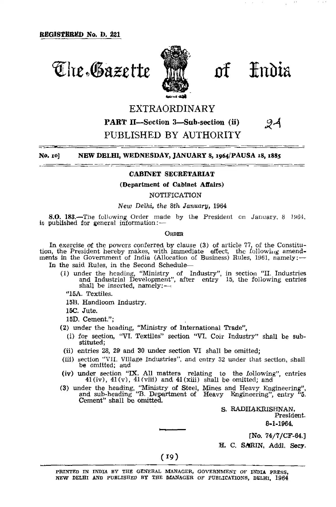

Amendment #24 (S.O. 183, 1964)
6 changes: 0 to the First Schedule, 6 to the Second Schedule. 4 applied2 not applied
The order, page by page
Page 1 of 2

123456after Schedule 2 › Ministry of Industry › II. Industries and Industrial Development › entry 15
- 15A. Textiles.
- 15B. Handloom Industry.
- 15C. Jute.
- 15D. Cement.
applied at schedule 2 › ministry MINISTRY OF INDUSTRY › group_heading II › entry 15A in the Rules after #24
Schedule 2 › Ministry of International Trade › VI. Textiles
- VI. Textiles" section “VI. Coir Industry
applied at schedule 2 › ministry Ministry of International Trade › group_heading VI in the Rules after #24
Schedule 2 › Ministry of International Trade › VI. Coir Industry › entry 28; Schedule 2 › Ministry of International Trade › VI. Coir Industry › entry 29; Schedule 2 › Ministry of International Trade › VI. Coir Industry › entry 30
not applied (the change could not be placed in the Rules as read; see How this document was read)
Schedule 2 › Ministry of International Trade › VII. Village Industries; Schedule 2 › Ministry of International Trade › VII. Village Industries › entry 32
applied at schedule 2 › ministry Ministry of International Trade › group_heading VII in the Rules after #24
Schedule 2 › Ministry of International Trade › IX. All matters relating to the following › entry 41 › item iv; Schedule 2 › Ministry of International Trade › IX. All matters relating to the following › entry 41 › item v; Schedule 2 › Ministry of International Trade › IX. All matters relating to the following › entry 41 › item viii; Schedule 2 › Ministry of International Trade › IX. All matters relating to the following › entry 41 › item xiii
not applied (the change could not be placed in the Rules as read; see How this document was read)
Schedule 2 › Ministry of Steel, Mines and Heavy Engineering › Department of Heavy Engineering › entry 5
applied at schedule 2 › ministry MINISTRY OF STEEL, MINES AND HEAVY ENGINEERING › department B › entry 5 in the Rules after #24
Page 2 of 2

How this document was read
Known issues
| Change | Issue | Known as |
|---|---|---|
| 3 | change 3: no group_heading VI. Coir Industry under schedule 2 › ministry Ministry of International Trade | Group headings |
| 5 | change 5: no item iv under schedule 2 › ministry Ministry of International Trade › group_heading IX › entry 41 | Items |
From the Government of India (Allocation of Business) Rules, 1961 and their amendments, as published by the Cabinet Secretariat (cabsec.gov.in), read by orgpedia. The readings of the older scanned gazettes have known gaps.